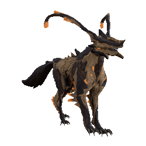
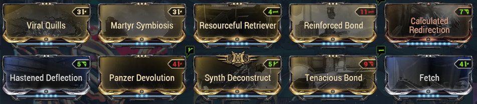
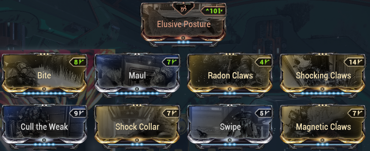
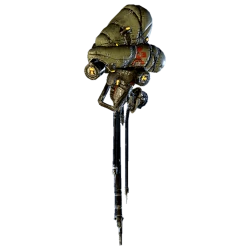
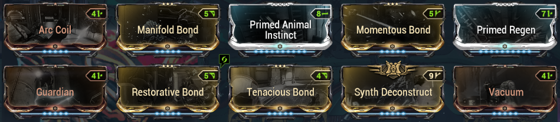
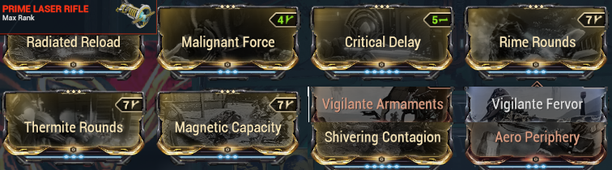
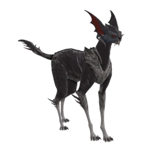
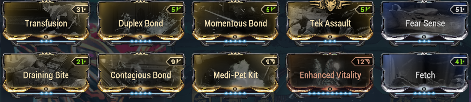
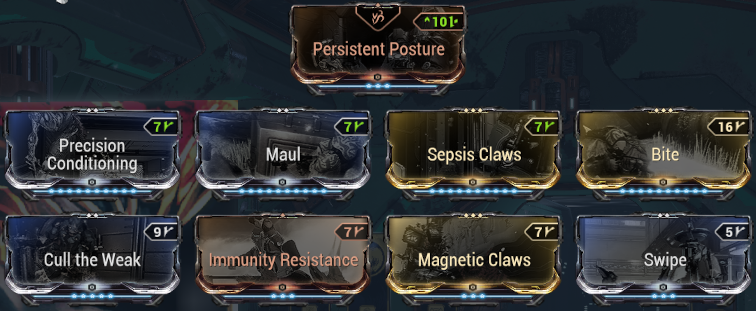

Companions
The companions are distinguished mainly by the companion mods exclusive to them, as well as access to different weapons. Remember to get the priority mods among the mods listed in Mods.
They complement your builds via different bonuses:
Utility pets: double-loot, energy, CC
- resource vacuum (Vacuum / Fetch)
- Enemy / resource radar (Animal Instinct / Primed Animal Instinct
- boost loot resources / credits
- survivability
- energy generation: Synth Deconstruct / Dig / Energy Generator / Archon Stretch + Arc Coil or electric claw mod
- control:
- skills: Arc Coil from Diriga
- weapons: Tazicor + Duplex Bond + CC status (fire / cold / electric)
- priming
- anti-status
- etc...
DPS pets
- DPS of companions themselves
- Buff of warframe weapons:
- Tenacious Bond +1.2x crit damage
- compatible:
- all animal companions with Bite or Hunter Synergy if needed
- sentry weapons WITHOUT riven: Prime Laser Rifle, Vulcax, Vulklok, Burst Laser Prime
- sentry weapons WITH riven: Verglas Prime
- compatible:
- Reinforced Bond +60% fire rate
- Do NOT rely on the internal mod recharge to exceed 1200: bugged if you are not host in a party
- companions exceeding 1200 shields with Calculated Redirection: Wyrm Prime, Nautilus Prime, Huras Kubrow, Raksa Kubrow, Sunika Kubrow, all vulpaphylas and Predasites, all Moa/Hounds with shield-oriented parts
- Tenacious Bond +1.2x crit damage
Companions: Essential
The basics, the ones to build/use as priority. Companions with AoE and survival skills that help a lot. An AoE + Synth Deconstruct allows generating health orbs, and energy if your frame has Equilibrium or a shard purple.
Panzer Vulpaphyla

Panzer: advantages
- sends viral everywhere (Viral Quills / Panzer Devolution)
- sometimes prevents death (Martyr Simbiosis)
- animal companion so can use "Retriever" mods to boost your farming
Acquisition
- go to Cambion Drift on Deimos during the Fass period (Deimos day/night cycle)
- buy a Tranq rifle from The Business or Son, equip it in your consumable wheel in your Arsenal (2nd tab at top left)
- search and capture via conservation a Weakened Panzer. To be weakened, the Panzer must have been attacked by an Infested. You can do bounties and sometimes get already weakened capturable ones without effort... otherwise actively search via the Tranq Rifle zoom which indicates nearby enemies (beep + arrows)
- bring your weakened Panzer for revification to Son in the Necralisk with an Antigen and a Mutagen of your choice (blueprints sold by Son, to craft in your Foundry)
Panzer: build
Panzer Build:

Panzer Claws Build:

Diriga

Diriga: advantages
- electric stun AoE with Arc Coil
- can take "Guardian" to regen your shields
- take weapon with lots of status to inflict status with Manifold Bond (priming)
-
diriga: recommended weapon
- Prime Laser Rifle, has all melee Impact Puncture Slash status + can easily have +50% crit to unlock Tenacious Bond
- or just a Verglas viral/fire to explode enemies (or nuke a room with Contagious + Manifold + Momentous Bond)
Diriga: Obtention
Purchasable for credits in the Market of your orbiter.
Diriga: build
Diriga Build:

Diriga Weapon Build (Prime Laser Rifle):

Vasca Kavat

Vasca: advantages
- good safety (rez via Transfusion)
- very good damage allowing energy orb generation via Duplex Bond
- access to Retriever mods
- access to Kavat mod Swipe for a bit of AoE: +DPS & compatibility with Synth Deconstruct
Acquisition
- upgrade your Incubator with the Kavat Upgrade Segment (blueprint in the Dojo in Tenno Lab or drop in Grineer missions). Requires an Argon Crystal which drops only in the Void and 60,000 Alloy Plates, see Resources for good spots
- genetic codes will be a limiting factor.
- the best place to scan kavats is the 2nd stage of the Inaros quest doable only once
- other farming location: Formido on Deimos (Sabotage)
- plan for control that doesn't deal damage and immobilizes (Ivara's arrow, Equinox night mode 2)
- if possible use the Synthesis Scanner with speed and double scan upgrades (can double drops in this case). Stack loot boosters if possible
- Vasca-specific steps:
- use previously raised Kavats
- take them at night on Earth in the Plains of Eidolon, cross wild Vasca Kavats and let your Kavat get infected (red aura)
- recover the genetic imprint of your infected Kavat in the Incubator
- repeat to get 2 Vasca genetic imprints
- incubate a kavat by adding the 2 Vasca imprints
Vasca: build
Vasca Build:

Vasca Claws Build:

Companions: Notable
Less versatile than the Essentials, they can complete a build or fulfill a particular function via their niche abilities.
Smeeta Kavat: NO LONGER PROVIDES RESOURCE LOOT BUFF
This has been exported and generalized to all Retriever mods for animal companions.
- Nautilus Prime: auto-grouping of enemies with Cordon, gives access to the sentry weapon Verglas Prime very strong in viral/fire
- Smeeta Kavat: random buffs via Charm. Essentially used for 300% affinity/XP buff.
- Hounds from Tenet Lich: Big DPS/AoE Nuke capacity + niche utility mods + access to robotic mods (Guardian)
- Huras Kubrow: partial invisibility (Stalk + DPS (Paris Prime Incarnon stat-stick + Hunter Synergy + Mecha Overdrive + slash/fire crit claws)
- Shade Prime: partial invisibility (Ghost), dies less often than Huras because less aggro / follows frame
- Dethcube Prime: energy generation (Energy Generator)
- Wyrm Prime: auto-removal of received status via Negate, very good addition for survivability
Companions: Niche
Not useless but much less versatile than the others. For experts only.
- Pharaoh Predasite: +100% toxin damage on your weapons (which does not merge with your mods) via Anabolic Pollination
- Adarza Kavat: provides 60% final crits with Cat's Eye, stacks in addition to weapon crit from mods, always gives 60% total (like Arcane Avenger which gives 45%). Very good on weapons with low base crit that's hard to increase via mods.
- Chesa Kubrow: gives an additional loot chance on corpses with Retrieve (works like Nekros). Used for opening apothics.
- Raksa Kubrow: gives back shields + increases shield regen via Protect. Scales with its own shields so a frame with lots of shields + Link Redirection: top with Hildryn
- Oxylus: auto-scan of plants for apothics (Botanist, good for passive farming if you rush maps for relics (not recommended for fishing/mining despite its precepts, better to take an animal that can equip a retriever mod and doubles resources)
- Helios Prime: automatic scanning for the codex (Investigator + access to melee glaive weapon Deconstructor
- Sahasa Kubrow: provides ammo and energy orbs via Dig
- Carrier Prime: provides ammo via Ammo Case
- Sly Vulpaphyla: boosts survival with Survival Instinct mod which resets enemy aggro. Also has access to general Vulpa mods like Martyr Simbiosis
- Moa: can equip sentry weapons (Verglas Prime, Tazicor), use robotic mods (Guardian) and have niche utility mods. Notable mods: pet survival Blast Shield, grouping Whiplash Mine, area tanking/defense Stasis Field, auto-hack Security Override (allows hacking through windows via Master's Summons)